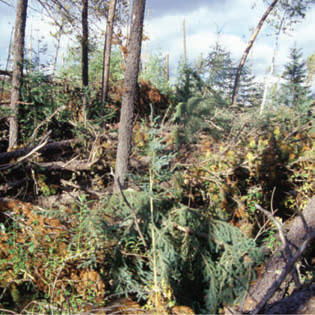
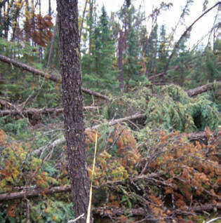

Description: The primary carrier of fire in SB4 is heavy blowdown fuel. Blowdown is total, fuelbed not compacted, most foliage and fine fuel still attached to blowdown. Spread rate very high; flame length very high.
Fine fuel load (t/ac) 5.25
Characteristic SAV (ft-1) 1907
Packing ratio (dimensionless) 0.00744
Extinction moisture content (percent) 25